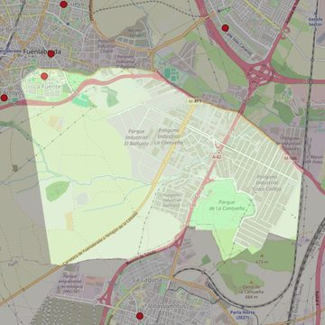

Santa Ana
- Arciprestazgo
- Fuenlabrada
- Población
- Fuenlabrada
- Dirección postal
- c/ Santa Juana, 5
- Código postal
- 28944
- Extensión
- 11,91 km² (1.191 ha)
- Teléfono
- 916 975 446
- Correo electrónico
- santaana-fuenlabrada@diocesisgetafe.es


Descargar mapaLímites según decreto
“Partiendo de la intersección de las calles Comunidad de Madrid y Los Arados, arrancan por el eje de la calle Comunidad de Madrid (en dirección noroeste); continúan por el eje de la calle Extremadura (en dirección este), por el eje de la calle Constitución (en dirección sureste), por el eje de la carretera Villaviciosa-Pinto (en dirección sureste), por el eje de la autovía Móstoles-Pinto (en dirección sureste y hasta el límite municipal de Pinto), por los límites de los términos municipales de Fuenlabrada y Pinto (en dirección sur), por los límites de los términos municipales de Fuenlabrada y Parla (en dirección oeste), por una línea recta imaginaria hasta la calle Los Arados (en dirección norte), por el eje de la calle Los Arados (en dirección norte) hasta la confluencia con la calle Comunidad de Madrid, punto de partida”. (Decreto de erección de 25-5-2000; Boletín Oficial, Junio-2000, pág 539-540)